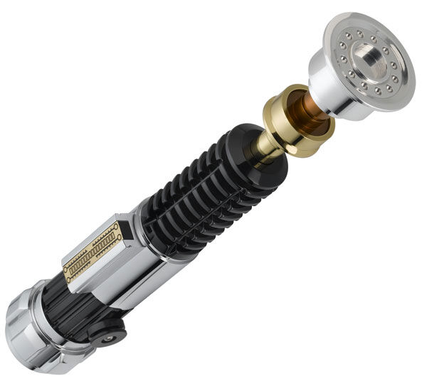

General information
Obi-Wan Kenobi, also known as Ben Kenobi, was a human male Jedi Master who served on the Jedi High Council during the final years of the Republic Era. As a Jedi General, Kenobi served in the Grand Army of the Republic that fought against the Separatist Droid Army during the Clone Wars. Kenobi, however, was forced into exile as a result of the Great Jedi Purge. As a mentor, Kenobi was responsible for training two members of the Skywalker family, Anakin Skywalker and Luke Skywalker, both of whom served in turn as his Padawan in the ways of the Force.
Kenobi was born on the planet Stewjon in 57 BBY. He was Force-sensitive, and therefore inducted into the Jedi Order as a child. Raised in the Jedi Temple on Coruscant, Kenobi was assigned to Jedi Master Qui-Gon Jinn. In 32 BBY, Kenobi attained the rank of Jedi Knight by defeating the Sith Lord Darth Maul during the Invasion of Naboo. He also chose to train Anakin Skywalker—the prophesied Chosen One who was destined to destroy the Sith and restore balance to the Force—having promised Jinn who died in the lightsaber duel against Maul.
With the advent of the Clone Wars in 22 BBY, Kenobi adopted the military rank of High Jedi General in the Grand Army of the Galactic Republic, and was given command of the Open Circle Fleet, the Third Systems Army, and the 7th Sky Corps. Clone Marshal Commander CC-2224 "Cody" served as his second-in-command throughout the galaxy-wide conflict, with their forces achieving multiple victories over the Confederacy of Independent Systems. In the midst of the war, his old enemy Maul re-emerged into galactic affairs, bent on revenge against Kenobi for his debilitating defeat decades prior. Though they clashed in heated duels on multiple occasions, Maul failed to end Kenobi's life or cripple his spirit, despite murdering his former love, Satine Kryze, Duchess of Mandalore. In 19 BBY, Kenobi killed Supreme Martial Commander of the Separatist Droid Armies General Grievous during the Battle of Utapau, effectively ending the Clone Wars. He survived the initial onslaught of the Great Jedi Purge against the Jedi Order, which resulted from the machinations of the Sith Lord Darth Sidious. After discovering that Skywalker had turned to the dark side of the Force, becoming Sidious' Sith apprentice under the name of Darth Vader, Kenobi defeated his former Padawan on Mustafar and exiled himself to the Outer Rim planet Tatooine as the Galactic Empire rose to power.
Adopting a hermit lifestyle as "Ben Kenobi," he watched over Vader's son, Luke Skywalker. While in exile, Kenobi was hunted down once again by Maul, who he finally slew to protect the young Luke. Kenobi began the boy's Jedi training in 0 BBY, and soon after encountered Vader aboard the first Death Star, where he sacrificed himself to ensure that Luke and his allies escaped from the Sith Lord. In death, Kenobi became one with the Force which allowed him to continue guiding Luke throughout the Galactic Civil War. In 4 ABY, Kenobi reunited with his former student, Anakin Skywalker, who died destroying his Sith Master in order to save his son. Kenobi was remembered as a legendary Jedi Master during the rise of the New Republic; Ben Solo, the son of Luke's twin sister, Princess Leia Organa, was named after Kenobi. Solo's turn to the dark side left Luke disillusioned with the Jedi Order's legacy, and he held Kenobi responsible for Anakin's transformation into Vader. However, Luke's faith would eventually be restored with the aid of Darth Sidious's granddaughter Rey, to whom Kenobi would lend his voice and strength in a final battle and victory against her resurrected ancestor on Exegol in 35 ABY.
Obi-Wan Kenobi's lightsaber
Obi-Wan Kenobi's third lightsaber was the third, and final, lightsaber to be constructed and wielded by Jedi Master Obi-Wan Kenobi during the Clone Wars after he lost his second one prior to the First Battle of Geonosis. He used the lightsaber in a duel with General Grievous, where he lost it and eventually reclaimed it, when it was given back to him by Clone Commander CC-2224 "Cody." He would also use this lightsaber to duel his fallen apprentice Darth Vader on Mustafar, and would continue to wield the weapon during his 19-year exile on Tatooine up until his death at the hands of Vader during their rematch on the Death Star. Obi-Wan's second apprentice, Luke Skywalker, would later use this weapon's design as a basis for the construction of his own lightsaber.
Kenobi's lightsaber first appeared in the first Star Wars film, A New Hope. The original prop was created from the balance pipe of a Rolls-Royce Derwent jet engine, a World War I–era No. 3 Mark I British rifle grenade, a battery pack, and a faucet handle.
Back to home